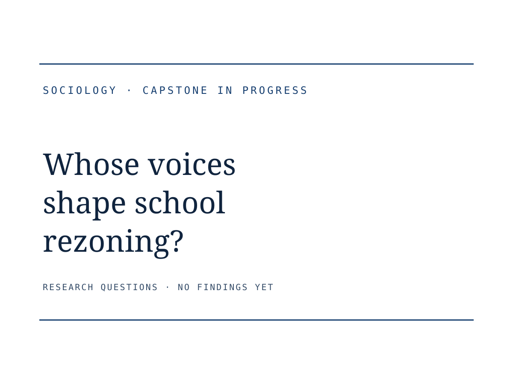

Sociology capstone · 2026–27 · in progress
Whose Voices Shape School Rezoning?
A qualitative study design examining parental participation and institutional decision-making during school boundary changes in Richmond, Virginia.

The Question
How do parents influence local school rezoning processes in Richmond? The capstone asks how families participate, what resources they draw on, and how school officials respond during boundary changes.
Case and Approach
The study focuses on Richmond Public Schools' completed 2019 rezoning process. The proposed design examines public comments, committee discussions, boundary proposals, and board decisions, with a comparison of selected proposals and outcomes.
The planned approach combines qualitative document analysis with descriptive geographic and school-level context. Subject to institutional ethics approval and recruitment, the design also proposes a small number of semi-structured interviews.
Status and Limitations
This is a capstone in development, not a completed study. No coded findings, interview results, or causal claims are presented. The design distinguishes participation in the public record from evidence that a specific argument influenced an institutional decision.